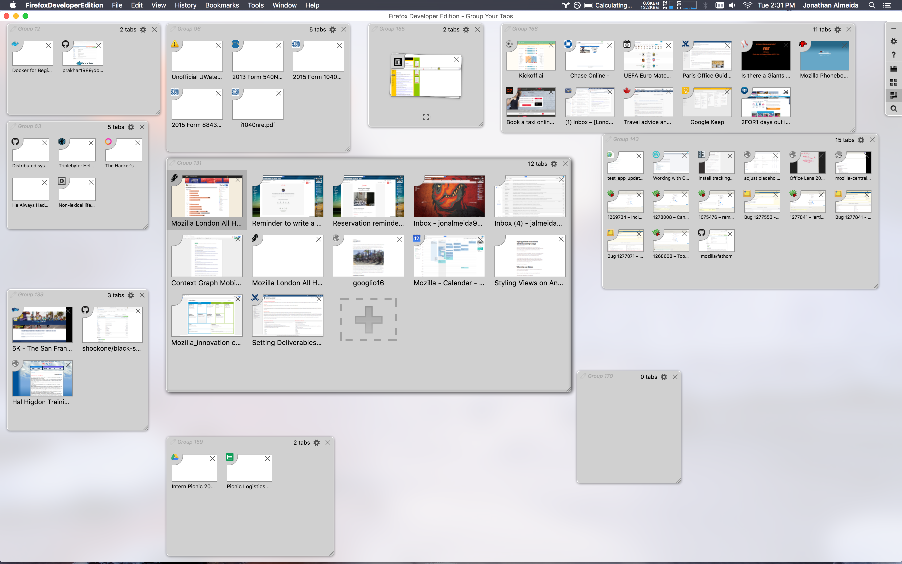

Jonathan Almeida [:jonalmeida]
Mobile Intern
CS Major @ University of Windsor
# Life is still hard
# Overview
- Prototypes
- Mentoring bugs
- Other things
- What I'm currently working on..
# Prototyping the future
- User Research sessions at London All Hands
- Workflows performing particular asks.
- Insights for Shopping:
- Tab comparison integration
- Share/save within the browser
## Developing the idea
I have a huge tab management problem.

-----
- This resonated with me since I used the Tab Groups feature in Firefox which is now discontinued and moved to a separate addon.
## What I wanted..
A tab organizer that did EVERYTHING!
- Automatic grouping into arbitrary groups
- Sync with desktop
- Custom Tabs for fast page loading on mobile
## Developing the idea
- Using Hammock-driven development
- Identifying the problem we're trying to solve
- Facts (what do you know about the problem?)
- Context (relevant background info, e.g. team uses framework X)
- Constraints (hard requirements)
- What don't you know?
- Solutions to similar problems?
-----
With the help of mcomella, we started to look at this from the perspect of Hammock-driven development and ask myself: What is the problem I'm trying to solve?
## Brainstorming

-----
- I spent some time brainstorming and whiteboarding things that weren't so clear.
- E.g. "Switching between tabs is quicker. What exactly is quicker? Why is it..?"

-----
- From these, I narrowed down what I was trying to solve and why I felt it was better.
- I started working on a prototype that did the essentials of what I wanted it to do.
## Tab Groups
-----
- I built a prototype app that would hold 'tabs' that would use Embedly to scrape keywords from the page and sort the tab into one of the four groups.
- With the help of another intern JD, using supervised learning, I was able to create a model using popular top sites and the keywords retrieved from them to categories the sites into those 4 groups.
- Every new tab would be compared to this model and we could classify the correct tab category from that.
- **show video in the background**
- One of the reasons I felt the original tab grouping helped me being able to identify the page I wanted from the thumbnail alone, so I have the tabs thumbnails as the screenshot of the page itself.
- I kept the categories of the groups hardcoded to these four for simplicity of implementation.
# Mentor for 'good first bug'
- Intended to be trivial for first-time contributors
- Simple tasks with very clear and concise instructions
- Sometimes that doesn't always work out
- You have to figure it out unrelated issues (mostly build things) for them that aren't related to their issue
-----
For me, it was trying to fix the bug myself so that I could see what were the problems they were running into.
## Side Notes
- Write clear instructions to be beginner-friendly, welcoming and clear
- A full set of instructions (!) with little assumption about the person
- First-timers tend to run into problems that you don't think about as being a problem
- How does mercurial work, pushing to mozreview/try, access control, etc.
- Be helpful!
-----
- When you start writing instructions for a new contributor, you want to make it as welcoming and clear at what needed to be done with a full set of instructions that they needed to fix it.
- You have to remember that we have a ridiculously long development process from a new contributors pov. E.g. explaining how mercurial works, pushing to mozreview, push to try, access control to all the previous tools as well.
- It's incredibly important to be helpful to new contributors - and that's hard when you're trying to solve other problems at the same time.
# What I'm Currently Working On
## Activity Stream
- The activity stream is a rich visual feed of your history and bookmarks.
- It's a new newtab experience for desktop (installed via Test Pilot)
- We want this on mobile as well to get that cross-platform goodness.
- I'm working on implementing the layout and UI for it.
## TL;DR - we want this..
- 
- 
- 
# Other things I did
## Intern Design Sprint
- We did this!
# ty ty
## Enjoy!
[ahomu/Talkie - GitHub.com](https://github.com/ahomu/Talkie)